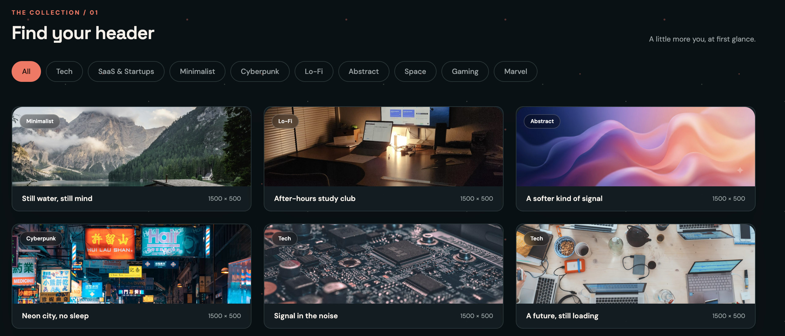
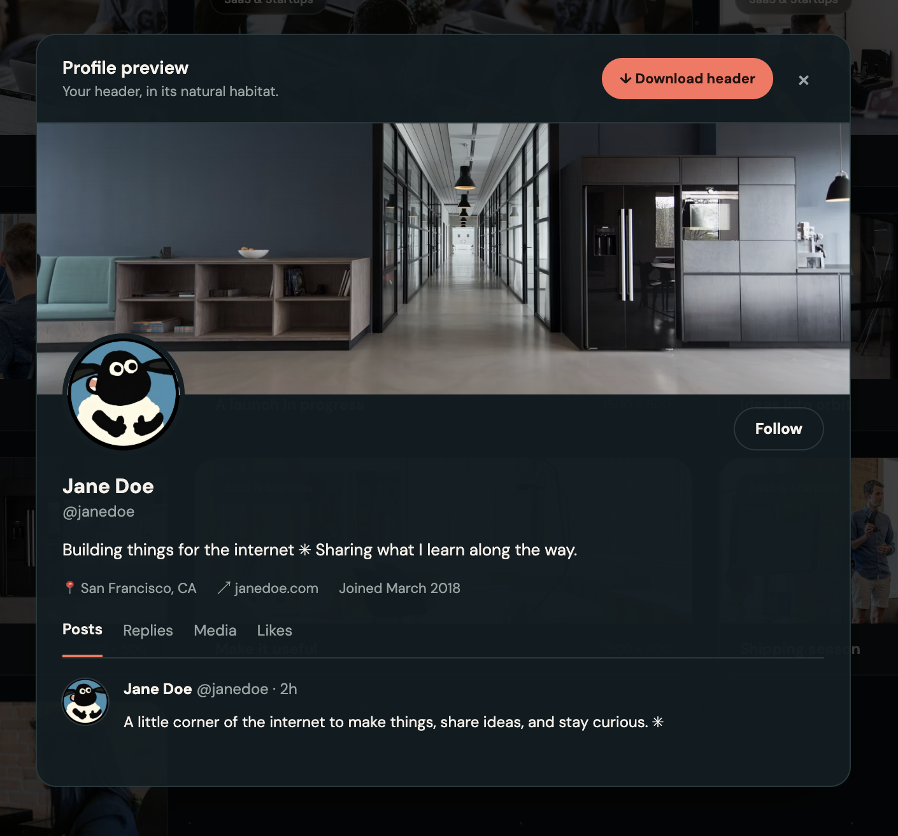
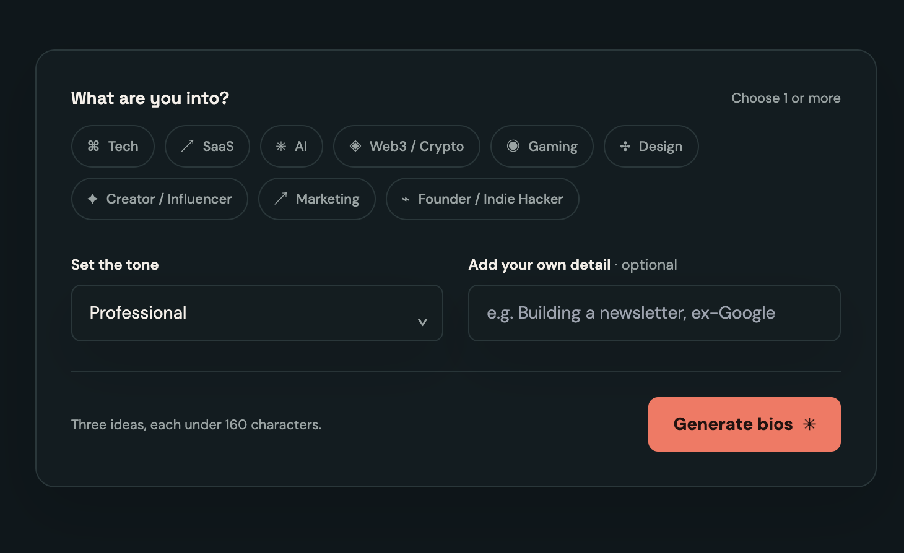

A project / learning by making
X Banners Studio.
Free headers. A little help finding your words.
Browse free X headers, then pick categories and a tone to generate AI bio ideas. Made by a beginner who kept poking at it until it started to feel like a product.
Open the studio Aspect Ratio ↑

